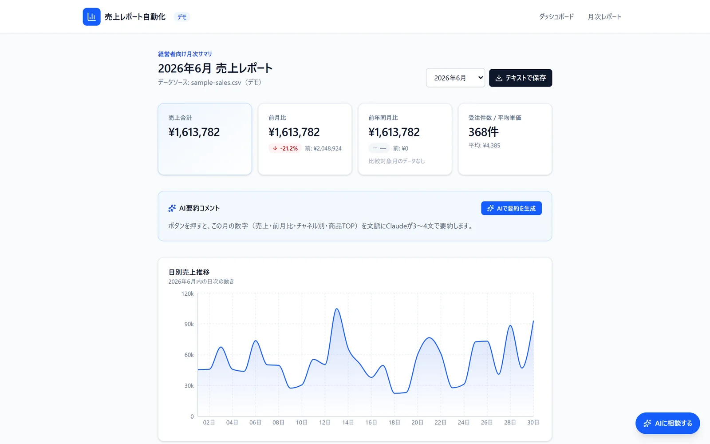
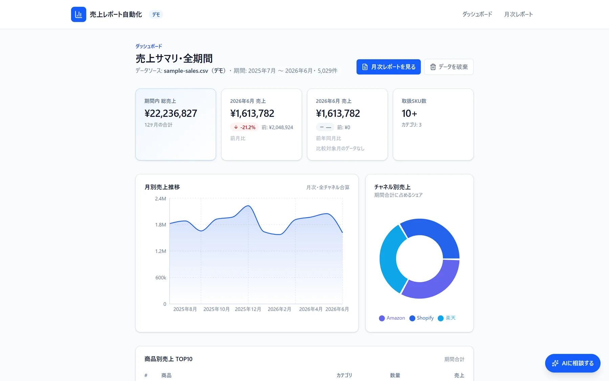
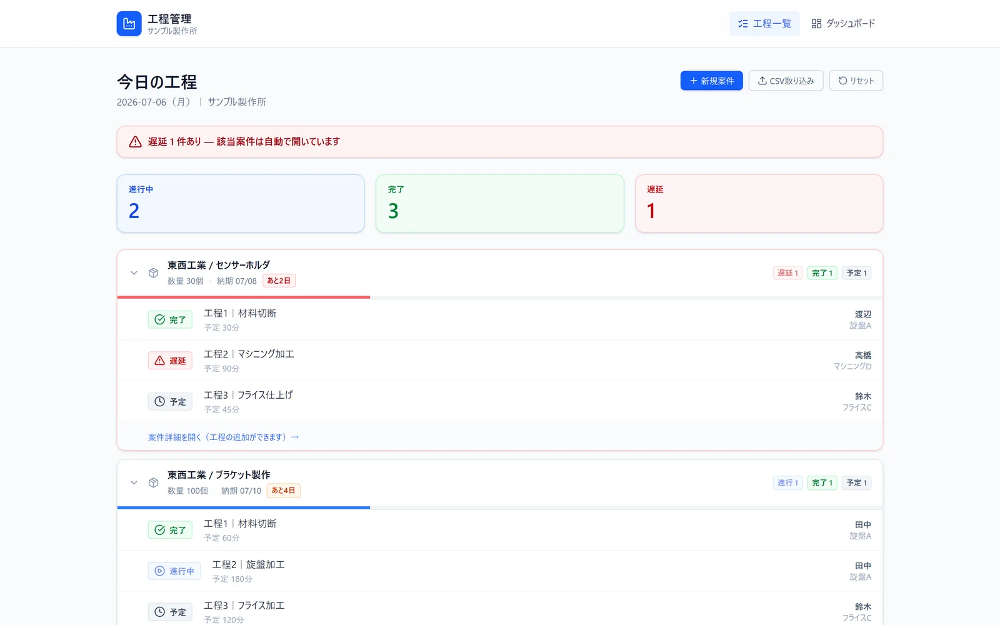
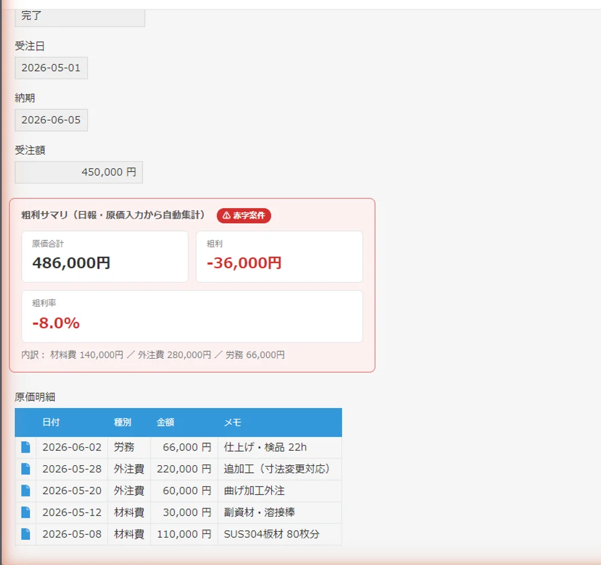
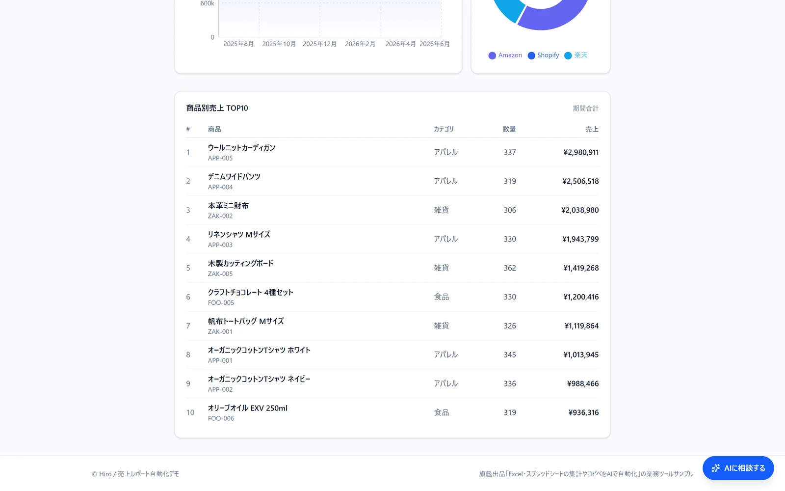
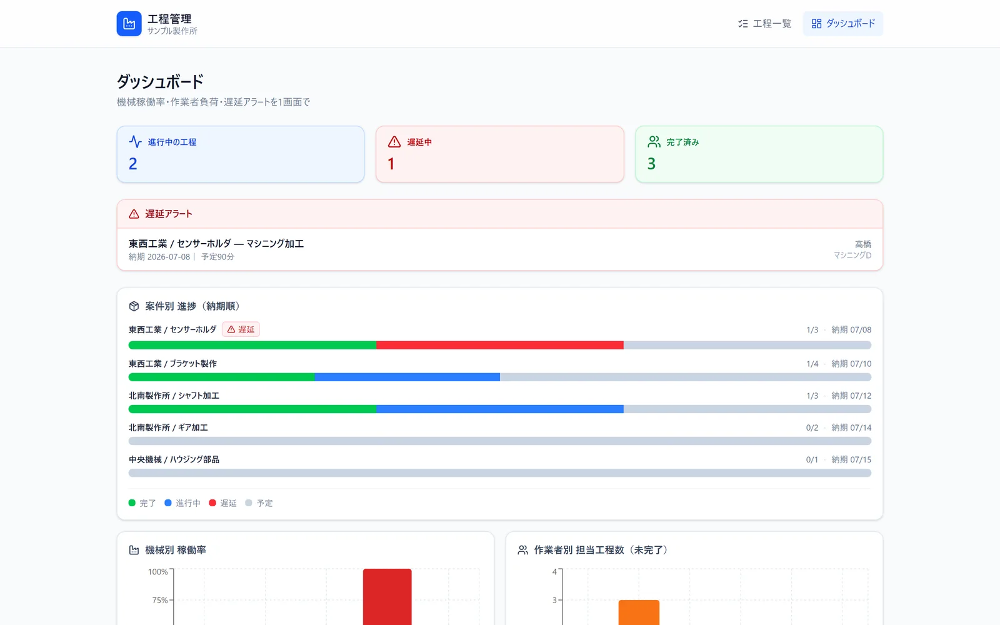
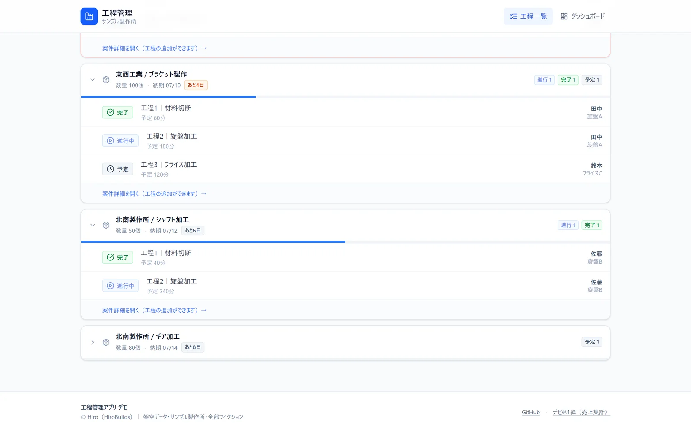

個人事業・小さな会社むけの受託自動化
毎月のExcel作業、
ボタン1個にします。
毎週・毎月くり返しているコピペや転記、関数の貼り直し。その手順をそのままプログラムにして、ボタン1個で終わるようにします。「本当にできる人か」は、言葉より実物で確かめてください。
※ご相談の窓口はココナラ（会員登録無料）です。ボタンからサービスページに移動します。

- デモ 3本実物と構築記録を公開中
- 最短 3日相談から納品まで
- ★ 5.0納品レビュー（2件）
WORKS
実物を公開しています
スクショだけでは腕は伝わらないので、作ったものをそのまま置いています。上の2本はリンク先で今すぐ操作できるデモ（登録不要）、kintoneは規約上デモ公開ができないため構築記録の記事で中身を公開しています。


ほかの制作物は ポートフォリオサイト にまとめています。
こんな作業、
毎月くり返していませんか？
- 売上や勤怠のデータを、毎月手作業でコピペして集計している
- シートを作った人が辞めたら、誰も直せない関数がある
- 報告資料づくりに毎回時間が溶ける。しかも手作業ミスが怖い
- 「自動化したい」と思いつつ、誰に何を頼めばいいか分からない
そのくり返し、仕組みにすれば毎月の作業は「ボタンを押して結果を確認するだけ」になります。
うちの場合どうなるか聞いてみる
SERVICE
できること
集計・転記の自動化
Excel関数・GAS・Pythonで、複数ファイルの集計や台帳への転記を自動化。手作業とミスをまとめて減らします。
レポートの自動生成
CSVや売上データから月次レポートを自動生成。AIによる要約コメントまで込みで「報告できる形」にします。
定期実行・通知
毎朝の実行・結果のメール/チャット通知まで設定して、「回し続けられる仕組み」として納品します。

依頼の流れ
- 1
無料相談
今の作業内容をテキストで教えてください。ヒアリングシートも用意しています。
- 2
お見積り
やること・やらないこと・金額・納期を先に明文化します。着手後の追加請求はしません。
- 3
試作を確認
途中経過を実際に触って確認いただき、ズレをその場で直します。
- 4
納品・サポート
使い方の説明書つきで納品。納品後の質問にも対応します。
ABOUT
作っている人
Hiro（HiroBuilds）／元・町工場の現場出身。工作機械のプログラミングで「機械に仕事をさせる」感覚を覚え、いまはExcel・スプレッドシート・Webの自動化ツールを作っています。
建設業界向けの企業情報リスト100社分をスクレイピング自動化で納品するなど、「地味やけど毎月効く」タイプの仕事が得意です。現場で手を動かしてきた人間なので、「その作業、実際は例外だらけ」という前提から設計します。
できること
- Excel・スプシの集計/転記/レポート自動化
- GAS・Python・AI APIを使ったツール制作
- WordPressの修正・自動投稿まわり
- テキストでの丁寧なやり取り
できないこと（正直に）
- 大規模な基幹システムの開発
- デザイン専門のグラフィック制作
- 電話・Web会議での打ち合わせ（テキストなら迅速に対応します）
FAQ
よくある質問

料金はどのくらいですか？
内容によって変わるため、まず無料相談で作業内容を伺ってからお見積りします。「やること・やらないこと・金額」を先に明文化し、着手後の追加請求はしません。費用感だけ知りたい段階のご相談も歓迎です。
ITにくわしくなくても頼めますか？
大丈夫です。今やっている作業を普段の言葉で教えていただければ、こちらで要件に翻訳します。納品時は使い方の説明書もお付けします。
データを渡すのが不安です
機密情報はマスキングやサンプルデータでの開発に対応します。実データが不要な工程では預かりません。
納品後に動かなくなったら？
納品後の質問・不具合対応の窓口を残します。継続的な保守やちょっとした改修のご相談も可能です。